在地老化工作坊
使用者經驗研究與設計 English

簡介
在這個課堂團體專案中，我們以舉辦一場共創工作坊，並產出一份使用者研究報告為目標。而我們這組選定以「在地老化」為議題，對台灣的活躍長者進行使用者研究，透過觀察、訪談與發放文化探針包蒐集研究資料，並將資料轉譯為人物誌與顧客旅程地圖。在學期末時，我們舉辦了一場主題圍繞在更理想的在地老化生活以及關懷據點的服務創新的共創工作坊，共計有8名參與者，時長為3個小時。
設計流程
用戶資料蒐集

設計工具
工作坊設計
工作坊結果
總結與改善
用戶資料蒐集
在用戶資料蒐集的階段，我們分別造訪了兩處的社區關懷據點，針對現階段年者長社區參與活動的情況進行觀察，並訪談了在場的志工與長輩們。此外，我們參考初步收集的資料設計了文化探針包，發放給7位年長者填寫，並依回收的資料製作了人物誌與顧客旅程地圖。
設計工具
在此專案中我們一共設計了一組文化探針包、一個人物誌以及一張顧客旅程地圖。分別介紹如下：
文化探針包
為獲得訪談無法獲取的脈絡，並更加了解長者的日常生活與價值觀，我們採用文化探針包的方法來收集資料。文化探針包內含的工具有：生活大小事的記錄本、數張明信片、貼紙、蠟筆、色筆與原子筆等。
生活大小事記錄本主要用於了解年長者一整天的具體行程，內容涵蓋日記、心情、移動路程的撰寫；明信片則是用於了解年長者的價值觀及夢想，透過在明信片上書寫問答的方式取得資料；貼紙、蠟筆、色筆、原字筆則是幫助長者撰寫及發揮創造力的隨附工具。
 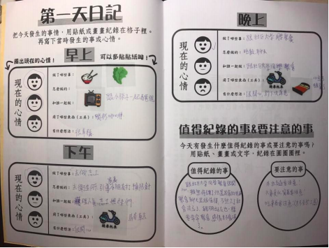
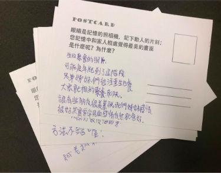
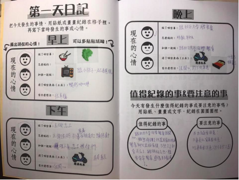
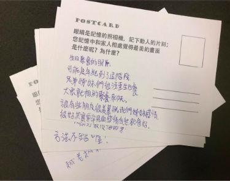
人物誌
我們根據回收的資料歸納出「社交型活躍年長者」這一型態的人物誌作為此次研究的主要用戶。此類年者長多半樂於分享並喜愛廣結朋友。他們重視家庭生活，珍惜與家人相處的時光。在白天空閒時段則希望能夠充實的過每一天。
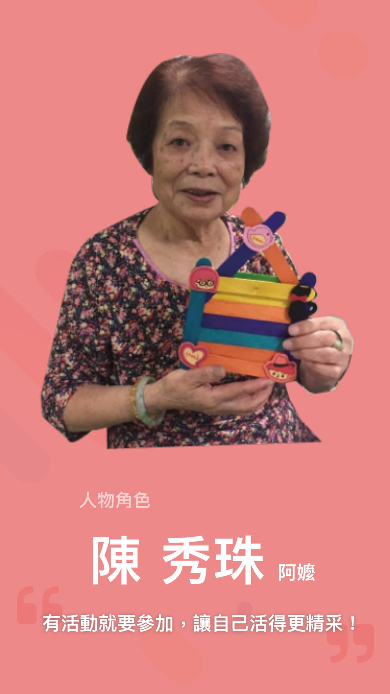 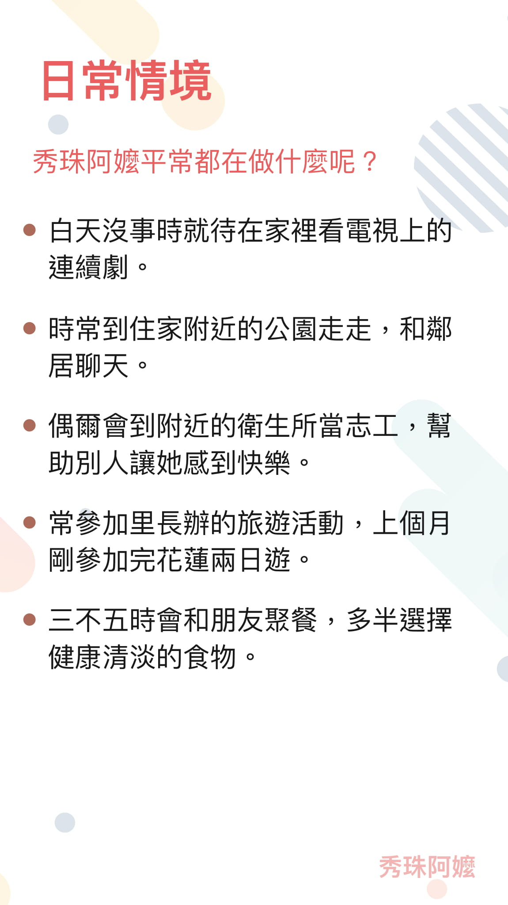
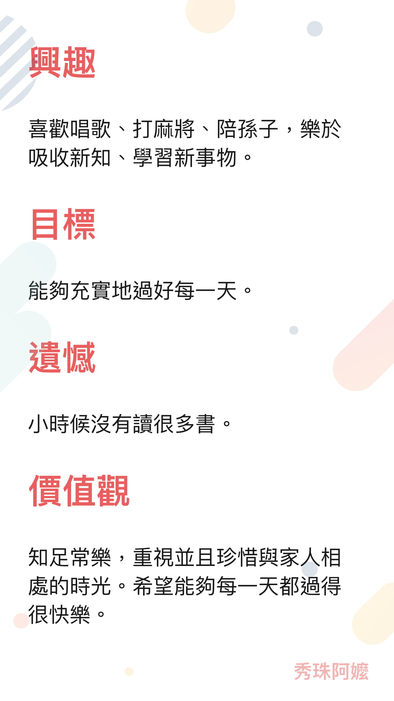
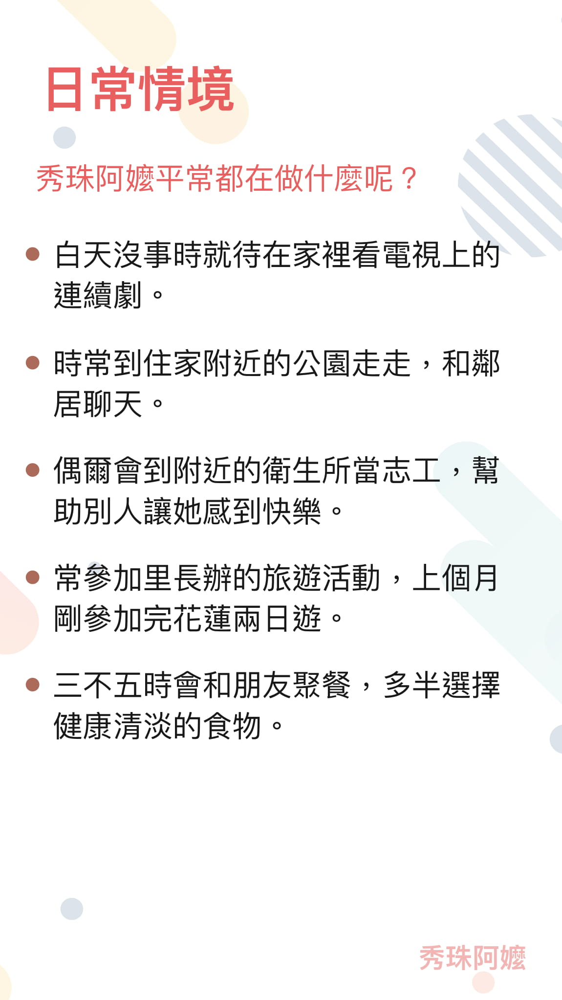
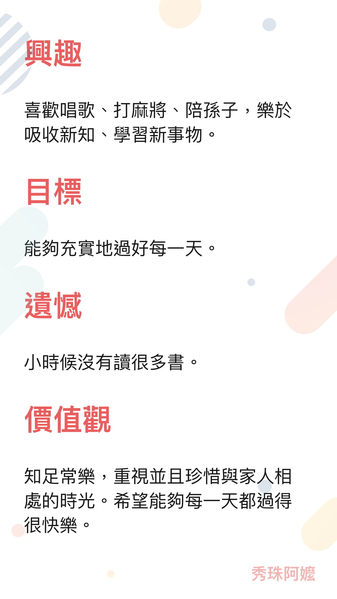

顧客旅程地圖
我們也從文化探針包當中的日記歸納出「社交型活躍年長者」參與關懷據點的一日顧客旅程地圖。從中我們可以發現，離開關懷據點後，多半長者待在家中的活動不外乎就是看電視與睡覺。此外，與人相處的時光對年長者們而言普遍來說都是快樂的。
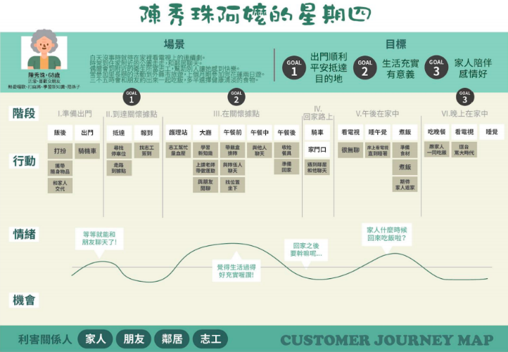工作坊設計
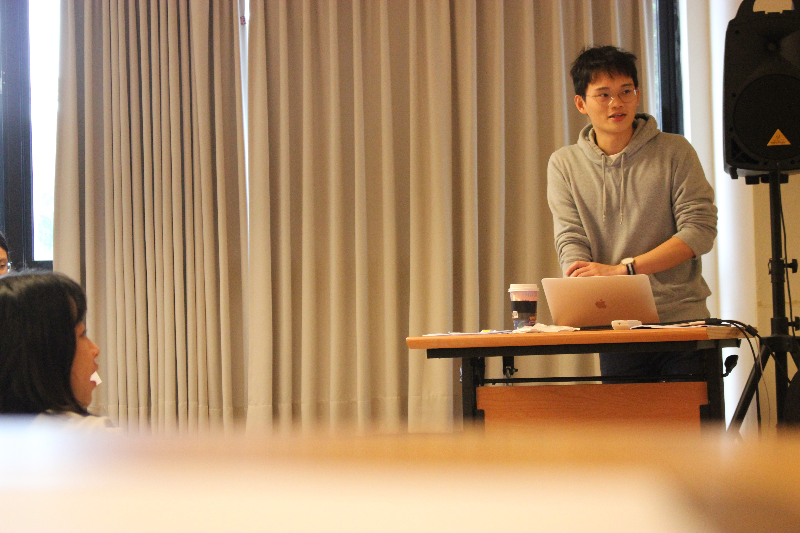在工作坊的設計坊方面，我們規劃了一場3個小時的工作坊，並招募了3男5女參與此次的在地老化共創工作坊，其中三名組員從中擔任引導員，而我則負責主持工作坊的進行。我們將工作坊區分為「情境同理」、「創意發想」與「原型製作」三個階段。

在情境同理階段，我們向參與者呈現研究資料，包括人物誌與顧客旅程地圖，並請參與者們分享他們從資料中看到的痛點與設計機會點。在創意發想階段，我們則準備國內外案例協助刺激參與者腦力激盪，並票選最佳點子。最後在原型製作階段，我們採用樂高認真玩的方法，讓參與者們以樂高實踐點子，並向大家發表。
工作坊結果
 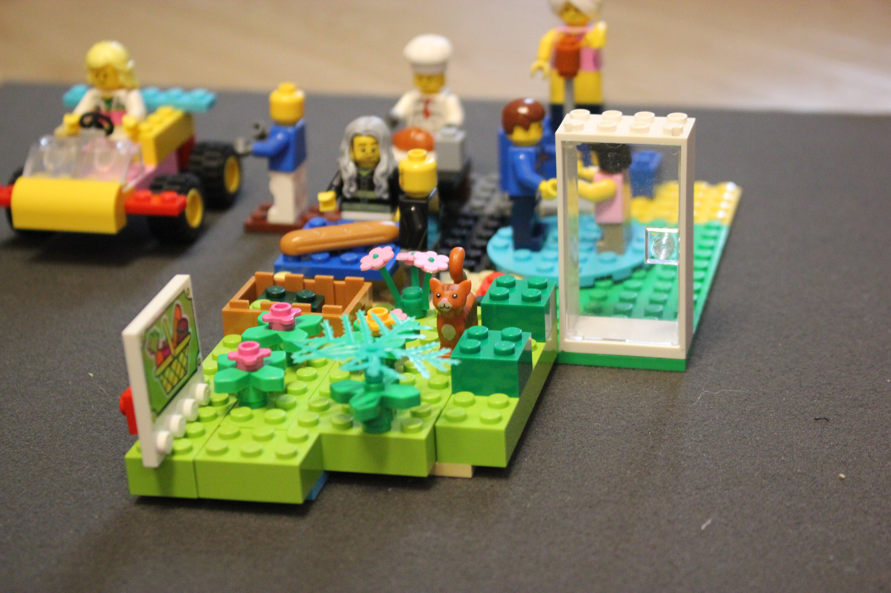
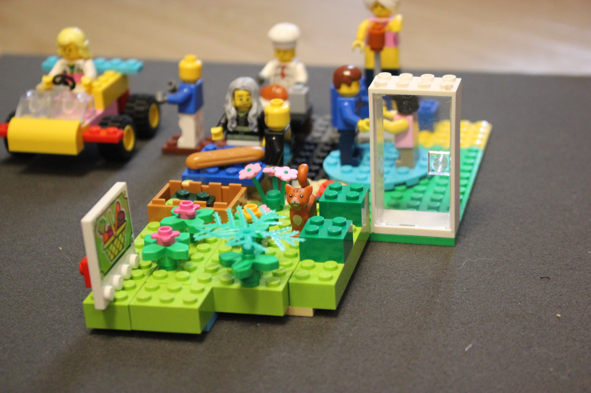
此次工作坊我們共收集了兩組以樂高呈現的在地老化服務情境、參與者閱讀研究資料所提取之洞察與議題以及總結回饋單數張。此外我們亦延伸工作坊產出，額外提出兩組在地老化服務情境。更詳細的工作坊成果內容請參閱簡報檔。
總結與改善
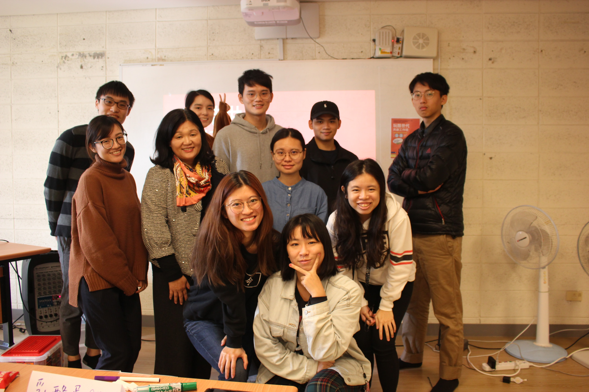此課程我們試著從瞭解目標族群開始，透過觀察、訪談與研究工具的使用，製作各類促進工作坊的設計工具，並實際招募參與者，舉辦了一場小型的共創工作坊。而整體檢討與反思後，在未來舉辦工作坊的規劃上，我們也學習到可以從參與者背景、資料的呈現方式、教練的引導與氣氛的營造等不同的面向去做改善與設計。